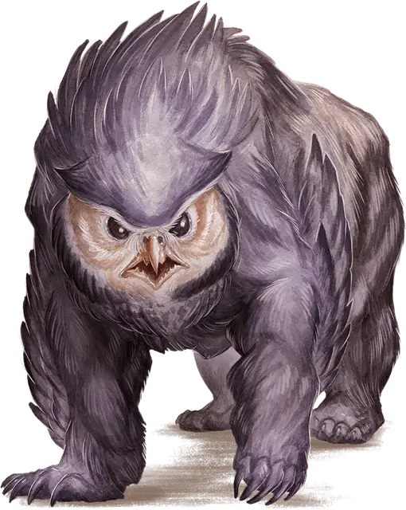

Совомедведь
Owlbear
Большое Чудовище, без мировоззрения

Класс Защиты 13 Инициатива +1 (11)
Хиты 59 (7к10 + 21)
Скорость 40 футов, Лазания 40 футов
| мод | спас | ||
|---|---|---|---|
| СИЛ | 20 | +5 | +5 |
| ЛОВ | 12 | +1 | +1 |
| ТЕЛ | 17 | +3 | +3 |
| мод | спас | ||
|---|---|---|---|
| ИНТ | 3 | −4 | −4 |
| МДР | 12 | +1 | +1 |
| ХАР | 7 | −2 | −2 |
Чувства Тёмное зрение 60 футов, пассивное Восприятие 15
Языки нет
Опасность 3 (700 опыта; БВ +2)
Действия
Мультиатака. Совомедведь совершает две атаки Раздиранием.
Раздирание. Бросок рукопашной атаки: +7, досягаемость 5 фт. Попадание: 14 (2к8 + 5) Рубящего урона.
Бонус мастерства +2
Среда обитания Леса
Сокровища Отсутствуют
Совомедведи
Магически усовершенствованные хищники
Созданные в незапамятные времена заблудшими магами, совомедведи сочетают в себе зоркие птичьи глаза, густое оперение и рвущий плоть клюв с могучим медвежьим телом. Несмотря на искусственное происхождение, эти твари расплодились по диким землям всей мультивселенной.
Логова совомедведей отличаются от прочих по характерным признакам. Совершите бросок по таблице «Особенности логова совомедведя» для вдохновения или определите сами приметные черты его жилища.
Особенности логова совомедведя
| 1к4 | В логове совомедведя есть… |
| 1 | Следы прежних обитателей — бандитов, волков или драконов. |
| 2 | Кучи отрыгнутых катышков, утыканные монетами и ценностями. |
| 3 | Гнездо с 1к6 яиц совомедведя. |
| 4 | Ходы в толще земли или внутри полых деревьев. |
Совомедведи — упорные охотники, которые выслеживают добычу многие мили и почти никогда не отказываются от начатой погони.